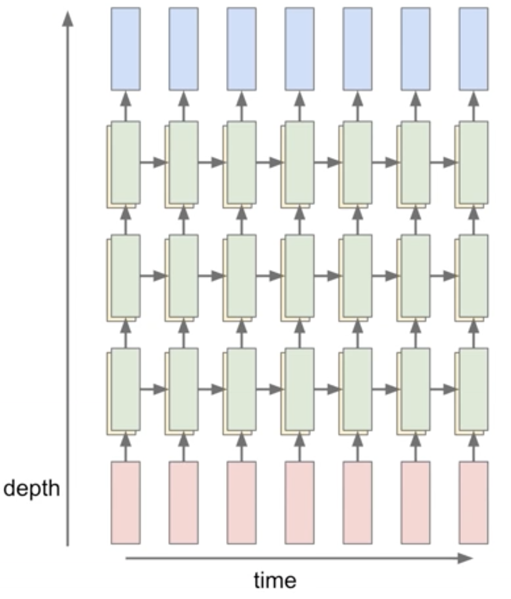

import numpy as np
import matplotlib.pylab as plt1 Introduction
When I started writing this post, my goal was to refresh my knowledge of LSTMs by implementing one from scratch. I was initially tempted to use PyTorch or Karpathy’s micrograd, but since I also wanted to implement the backpropagation part myself without relying on an autograd engine, I decided to go with NumPy. This choice meant that the optimizer and training loop would also have to be implemented in NumPy, turning the project into a comprehensive deep dive. So here we are 😅
On the bright side, it’s been a great learning experience. I’ve refreshed my understanding of computational graphs, gradient accumulation in recurrent models, and the inner workings of the Adam optimizer. In this post, I’ll walk you through the implementation which resembles a PyTorch-like API. The areas covered are:
- Multi-layer LSTM Model
- AdamW Optimizer
- Dataset and Dataloader
- Training on the Shakespeare dataset
I’ll be using a similar presentation style to labml.ai since it’s much easier to follow the code when the explanation is right beside it. Be sure to check out their website for some cool implementations if you haven’t already.
I hope you’ll find this post helpful. 😎
P.S. You can toggle between light and dark mode through the button at the top right corner.
2 Multi-Layer LSTM
Long Short-Term Memory (LSTM) is a type of recurrent neural network (RNN) architecture specifically designed to handle long-term dependencies in sequential data. It incorporates a memory state, a hidden state, and three gating mechanisms: the input gate, forget gate, and output gate. These gates control the flow of information into, out of, and within the memory and hidden states, allowing the LSTM to selectively remember or forget information at each time step.
The memory state in an LSTM acts as a long-term storage unit, allowing the network to retain information over long sequences. The input gate determines how much new information should be stored in the memory state, while the forget gate controls the amount of old information to be discarded. The output gate regulates the flow of information from the memory state and hidden state to the next time step.
The LSTM cell consists of the following components: \[ \begin{aligned} f_t &= \sigma(W_{if}x_t + b_{if} + W_{hf}h_{t-1} + b_{hf}) \\ i_t &= \sigma(W_{ii}x_t + b_{ii} + W_{hi}h_{t-1} + b_{hi}) \\ o_t &= \sigma(W_{io}x_t + b_{io} + W_{ho}h_{t-1} + b_{ho}) \\ \tilde{C}_t &= \tanh(W_{ic}x_t + b_{ic} + W_{hc}h_{t-1} + b_{hc}) \\ C_t &= f_t \odot C_{t-1} + i_t \odot \tilde{C}_t \\ h_t &= o_t \odot \tanh(C_t) \end{aligned} \]
where \(f_t\), \(i_t\), and \(o_t\) are the forget, input, and output gates, respectively. \(\tilde{C}_t\) is the candidate memory state, \(C_t\) is the memory state, and \(h_t\) is the hidden state at time step \(t\). \(x_t\) is the input at time step \(t\), \(h_{t-1}\) is the hidden state at time step \(t-1\), and \(W\) and \(b\) are the weights and biases of each gate.
CIFG LSTM
In this post, we’ll implement a special of type of LSTM called Coupled Input and Forget Gate (CIFG) [2]. In CIFG LSTM, the input gate is computed as: \[i_t = 1 - f_t\] This reduces the number of parameters in the model and has been shown to perform well in practice.
Multi-layers
A multi-layer LSTM is simply stacking multiple LSTM cells on top of each other. The output of the previous LSTM cell is fed as input to the next LSTM cell. The hidden state of the last LSTM cell is the input to the classification layer.

Now let’s get into the implementation, step by step.
lstm.py
Import the dependencies.
The activation functions are defined in a separate module
1import numpy as np
2from collections import defaultdict
3from copy import deepcopy
4from op import sigmoid, tanh, softmaxLSTM Classifier
Multi-layer LSTM classifier for sequence classification tasks.
It consists of an embedding layer, multiple LSTM cells, and a classification head. The model is used to process input sequences and generate output logits.
5class LSTMClassifier:embed_size: Dimension of the word embeddings, or more generally, the input features.hidden_size: The size of the hidden state of the LSTM cells.vocab_size: The number of unique tokens in the vocabulary.n_cells: Number of stacked LSTM cells in the model.
6 def __init__(
7 self,
8 embed_size: int,
9 hidden_size: int,
10 vocab_size: int,
11 n_cells: int = 1,
12 ) -> None:Define internal variables
13 self.embed_size = embed_size
14 self.hidden_size = hidden_size
15 self.vocab_size = vocab_size
16 self.n_cells = n_cells
17 self.layers = dict()Create embedding layer to convert word indices to embeddings
18 self.layers["embedding"] = np.empty((vocab_size, embed_size))Create LSTM layers
19 for cell_index in range(n_cells):For every forget, output, and cell gates, create a linear layer
20 for layer_name in ["f", "o", "c"]:The input size of the first layer is embed_size + hidden_size, since the input is the concatenation of the input features and the previous hidden state. For subsequent layers, the input size is 2 x hidden_size.
21 linp_sz = hidden_size + (
22 embed_size if cell_index == 0 else hidden_size
23 )
24 self.layers[f"W{layer_name}_{cell_index}"] = np.empty(
25 (linp_sz, hidden_size)
26 )
27 self.layers[f"b{layer_name}_{cell_index}"] = np.empty(
28 (hidden_size)
29 )Classification head (projection layer) to generate logits
30 self.layers["W_head"] = np.empty((hidden_size, vocab_size))
31 self.layers["b_head"] = np.empty((vocab_size))Create the gradient arrays. These will be used to store the gradients during backpropagation.
32 self.grad = {k: np.empty_like(v) for k, v in self.layers.items()}Initialize the weights
33 self.init_weights()Calculate the total number of parameters in the model.
The size property of a numpy array returns the number of elements in the array.
34 @property
35 def num_parameters(self):
36 return sum(l.size for l in self.layers.values())Glorot/Xavier initialization
The weights are initialized from a uniform distribution in the range \([-d, d]\), where \(d = \sqrt{\frac{6.0}{(r + c)}}\), and \(r\) and \(c\) are the number of rows and columns in the weight matrix. This makes the variance of the weights inversely proportional to the number the units, and helps in preventing the gradients from vanishing or exploding during training. The biases are initialized to zero.
37 def init_weights(self):
38 for name, layer in self.layers.items():
39 if layer.ndim == 1:
40 self.layers[name] = np.zeros((layer.shape[0]))
41 elif layer.ndim == 2:
42 r, c = layer.shape
43 d = np.sqrt(6.0 / (r + c))
44 self.layers[name] = np.random.uniform(-d, d, (r, c))Initialize the hidden and cell states for the LSTM layers.
45 def init_state(self, batch_size):
46 state = dict()For every LSTM cell and every sample in the batch, initialize the hidden and cell states to zeros.
47 state["h"] = np.zeros((self.n_cells, batch_size, self.hidden_size))
48 state["c"] = np.zeros((self.n_cells, batch_size, self.hidden_size))
49 return stateForward pass through the LSTM model.
inputs: Input sequences of shape (batch_size, seq_len, features)state: Hidden and cell states of the LSTM layers. If None, initialize the states to zeros.teacher_forcing: If True, useinputsas the input at each timestep. If False,inputsis used as the prefix.generation_length: Length of the generated sequence whenteacher_forcingis False.
50 def forward(
51 self, inputs, state=None, teacher_forcing=True, generation_length=0
52 ):
53 batch_sz, seq_len = inputs.shape[:2]
54
55 if teacher_forcing is True:
56 assert generation_length == 0
57
58 n_timestamps = seq_len + generation_length
59 activations = defaultdict(lambda: defaultdict(list))
60 outputs = np.zeros((batch_sz, n_timestamps, self.vocab_size))
61
62 if state is None:
63 state = self.init_state(batch_sz)
64 else:
65 state = state.copy() # make a shallow copy
66 for k in ["h", "c"]:
67 activations[k][-1] = state[k]
68
69 for timestep in range(n_timestamps):If teacher forcing is False and the prefix is consumed, use the previous prediction as the input for the next timestep
70 if teacher_forcing is False and timestep >= 1:
71 word_indices = np.argmax(outputs[:, timestep - 1], axis=1)
72 else:
73 word_indices = inputs[:, timestep]
74 features = self.layers["embedding"][word_indices]
75 activations["input"][timestep] = word_indicesForward pass through the LSTM cells
76 for cell_idx in range(self.n_cells):Previous cell states
77 h_prev = state["h"][cell_idx]
78 c_prev = state["c"][cell_idx]Concatenate the input features and the previous hidden state
79 X = np.concatenate((features, h_prev), axis=-1)Apply the gates, which are linear operations followed by activation functions
\( \begin{aligned} f_t &= \sigma(W_{if}x_t + b_{if} \;+\; W_{hf}h_{t-1} + b_{hf}) \\[1ex] i_t &= 1 - f_t \qquad\qquad \text{Coupled forget and input gates} \\[1ex] o_t &= \sigma(W_{io}x_t + b_{io} \;+\; W_{ho}h_{t-1} + b_{ho}) \\[1ex] \tilde{C}_t &= \tanh(W_{ic}x_t + b_{ic} \;+\; W_{hc}h_{t-1} + b_{hc}) \\[1ex] \end{aligned} \)
80 f = sigmoid(
81 X @ self.layers[f"Wf_{cell_idx}"]
82 + self.layers[f"bf_{cell_idx}"]
83 )
84 i = 1 - f
85 o = sigmoid(
86 X @ self.layers[f"Wo_{cell_idx}"]
87 + self.layers[f"bo_{cell_idx}"]
88 )
89 c_bar = tanh(
90 X @ self.layers[f"Wc_{cell_idx}"]
91 + self.layers[f"bc_{cell_idx}"]
92 )New memory cell and hidden state
\( \begin{aligned} C_t &= f_t \odot C_{t-1} + i_t \odot \tilde{C}_t \\[1ex] h_t &= o_t \odot \tanh(C_t) \end{aligned} \)
93 c = f * c_prev + i * c_bar
94 h = o * tanh(c)Classification head
95 if cell_idx == self.n_cells - 1:
96 logits = h @ self.layers["W_head"] + self.layers["b_head"]
97 probs = softmax(logits, axis=1)
98 outputs[:, timestep] = probsUpdate the state for the next timestep
99 state["c"][cell_idx] = c
100 state["h"][cell_idx] = h
101 features = hSave the activations for backpropagation
102 for k, v in zip(
103 ["x", "f", "o", "c_bar", "c", "h"], [X, f, o, c_bar, c, h]
104 ):
105 activations[k][timestep].append(v)106 return outputs, state, activationsAlias for the forward method, similar to PyTorch's nn.Module.
This enables model(inputs) \(\equiv\) model.forward(inputs)
107 __call__ = forwardBackward pass to compute the gradients.
grad: Gradient of the loss with respect to the output of the model, i.e. logits (pre-softmax scores)activations: Activations from the forward pass.
108 def backward(self, grad, activations):
109 batch_sz, seq_len = grad.shape[:2]Intialize the gradients of the next timestep to zeros. This will be updated as we move backward in time.
110 grad_next = {
111 k: np.zeros((self.n_cells, batch_sz, self.hidden_size))
112 for k in ["h", "c"]
113 }Helper function to compute the gradients of the linear layer. The gradients are computed with respect to the input, weights, and biases respectively.
X: Input to the linear layerW: Weights of the linear layerdY: Gradient of the loss with respect to the output of the linear layer
114 def _lin_grad(X, W, dY):
115 return (dY @ W.T, X.T @ dY, dY)Backpropagation through time
116 for timestep in reversed(range(seq_len)):Classification head
117 dout_t = grad[:, timestep]
118 h_t = activations["h"][timestep][-1]\(\text{logits}_t = h_t \mathbf{W}_{\text{head}} + \mathbf{b}_{\text{head}}\)
119 dh_t, dW_head, db_head = _lin_grad(
120 X=h_t, W=self.layers["W_head"], dY=dout_t
121 )
122 self.grad[f"W_head"] += dW_head
123 self.grad[f"b_head"] += np.sum(db_head, axis=0)Iterate over the LSTM cells in reverse order
124 for cell_idx in reversed(range(self.n_cells)):Get the activations for the current timestep
125 x, f, o, c_bar, c_t = (
126 activations[key][timestep][cell_idx]
127 for key in ["x", "f", "o", "c_bar", "c"]
128 )
129 c_p = activations["c"][timestep - 1][cell_idx]Gradients flowing from the next timestep. The gradient of the hidden state \(h_t\) is the sum of the gradients from the next cell and the next timestep.
130 dh_t += grad_next["h"][cell_idx]
131 dc_t = grad_next["c"][cell_idx]\(h_t = o * tanh(c_t)\)
132 do = dh_t * tanh(c_t)
133 dc_t = dh_t * o * tanh(c_t, grad=True)\(c_t = f \times c_p + (1 - f) \times c_{\text{bar}}\)
134 df = dc_t * (c_p - c_bar)
135 dc_p = dc_t * f
136 dc_bar = dc_t * (1 - f)Pre-activation gradients
137 dc_bar *= tanh(c_bar, grad=True)
138 do *= sigmoid(o, grad=True)
139 df *= sigmoid(f, grad=True)f, o, c Gates
Since all the gates are linear operations, the calculation will be similar
140 dinp, dh_prev = 0, 0
141 for gate, doutput in zip(["f", "o", "c"], [df, do, dc_bar]):
142 dX, dW, db = _lin_grad(
143 X=x, W=self.layers[f"W{gate}_{cell_idx}"], dY=doutput
144 )
145 self.grad[f"W{gate}_{cell_idx}"] += dW
146 self.grad[f"b{gate}_{cell_idx}"] += np.sum(db, axis=0)
147 dinp_gate, dh_prev_gate = (
148 dX[:, : -self.hidden_size],
149 dX[:, -self.hidden_size :],
150 )Accumulate the gradients for the input and the hidden state, since they are shared between the gates
151 dinp += dinp_gate
152 dh_prev += dh_prev_gateUpdate the gradients for the previous timestep
153 dh_t = dinp
154 grad_next["c"][cell_idx] = dc_p
155 grad_next["h"][cell_idx] = dh_prevEmbedding layer
156 word_indices = activations["input"][timestep]
157 self.grad["embedding"][word_indices] += dinpHelper method to serialize the model state, similar to PyTorch's state_dict.
The state dictionary contains the model configuration, weights, and gradients.
It can be used to save and load the model.
158 @property
159 def state_dict(self):
160 return dict(
161 config=dict(
162 embed_size=self.embed_size,
163 hidden_size=self.hidden_size,
164 vocab_size=self.vocab_size,
165 n_cells=self.n_cells,
166 ),
167 weights=deepcopy(self.layers),
168 grad=deepcopy(self.grad),
169 )170 @classmethod
171 def from_state_dict(cls, state_dict):
172 obj = cls(**state_dict["config"])
173 for src, tgt in zip(
174 [state_dict["weights"], state_dict["grad"]],
175 [obj.layers, obj.grad],
176 ):
177 for k, v in src.items():
178 tgt[k][:] = v
179 return obj3 Activation and Loss Functions
The activation functions used in LSTM are the sigmoid, tanh (hyperbolic tangent), and softmax functions.
Sigmoidis used to compute the gates, which are values between 0 and 1 that control the flow of information.
tanhfunction is used to compute the candidate memory state.
Softmaxis used to compute the output probabilities.
The loss function used is the cross-entropy loss, which is suitable for classification tasks. Next token prediction is indeed a classification task where the model predicts the probability distribution over the vocabulary for the next token in the sequence.
op.py
Sigmoid function
The sigmoid squashes the input to the range [0, 1].
- If the flag
gradisFalse, returns the sigmoid ofx: $$\sigma(x) = \frac{1}{1 + e^{-x}}$$ - Otherwise, \(x = \sigma(z)\) and the derivate \(\frac{\partial \sigma(z)}{\partial z}\) is returned: $$\frac{\partial \sigma(z)}{\partial z} = \sigma(z) * (1 - \sigma(z))= x(1-x)$$.
1import numpy as np
2
3
4def sigmoid(x, grad=False):
5 if not grad:
6 return 1 / (1 + np.exp(-x))
7 return x * (1 - x)Hyperbolic tangent function
The tanh function squashes the input to the range [-1, 1]. It's defined as:
$$\tanh(x) = \frac{e^{x} - e^{-x}}{e^{x} + e^{-x}}$$
8def tanh(x, grad=False):
9 if not grad:
10 return np.tanh(x)
11 return 1 - x**2Softmax function
Applies the softmax function to the input array along the specified axis. Softmax converts a vector of real numbers into a probability distribution. The logits are first exponentiated to make them positive and increase their separation. It's defined as: $$\text{softmax}(x_i) = \frac{e^{x_i}}{\sum_{j} e^{x_j}}$$
12def softmax(x, axis):Subtracting the maximum value for numerical stability. Softmax is invariant to to a constant shift
13 exps = np.exp(x - np.max(x, axis=axis, keepdims=True))
14 return exps / np.sum(exps, axis=axis, keepdims=True)Cross-entropy loss function
Computes the cross-entropy loss between the predicted and target distributions. The cross-entropy loss is defined as: $$H(y, p) = -\sum_{i} y_i \log(p_i)$$
prediction: The predicted array of probabilities of shape(batch_size, num_classes).target: The target array of shape(batch_size,)containing the class indices.
15def cross_entropy(prediction, target, reduction="mean"):
16 eps = np.finfo(prediction.dtype).eps
17 prediction = np.clip(prediction, eps, 1 - eps)Take the negative log of the predicted probability of the target class
18 loss = -np.take_along_axis(
19 np.log(prediction), target[..., np.newaxis], axis=-1
20 )Aggregate the loss
21 if reduction == "mean":
22 loss = loss.mean()
23 elif reduction == "sum":
24 loss = loss.sum()
25 return loss4 AdamW
AdamW is a variant of the Adam optimizer that decouples weight penalty from the optimization steps, where the weight penalty is applied directly to the gradients. Adam optimizer uses both the first and second moments of the gradients to adapt the learning rate tailored to each parameter. The benefit of Adam/AdamW is that it requires little tuning of hyperparameters compared to RMSprop and SGD. We’ll go over each step of the optimization in the implementation.
optim.py
Import NumPy
1import numpy as np2class AdamW:AdamW Optimizer
Parameters:
params(dict): Dictionary referencing the model parametersgrads(dict): Dictionary referencing the gradients of the model parameterslr(float): Learning ratebetas(Tuple[float, float]): Coefficients used for computing running averages of gradient and its squareeps(float): Term added to the denominator to improve numerical stabilityweight_decay(float): Weight decay (L2 penalty) coefficientamsgrad(bool): Whether to use the AMSGrad variant of the algorithm
3 def __init__(
4 self,
5 params: dict,
6 grads: dict,
7 lr=0.001,
8 betas: tuple[float, float] = (0.9, 0.999),
9 eps: float = 1e-8,
10 weight_decay: float = 1e-2,
11 amsgrad: bool = False,
12 ):
13 self.params = params
14 self.grads = grads
15 self.lr = lr
16 self.betas = betas
17 self.eps = eps
18 self.weight_decay = weight_decay
19 self.amsgrad = amsgradCounter for the number of iterations
20 self.n_iters = 0Initialize first moment vector (mean of gradients) for each parameter
21 self.m = {k: np.zeros_like(v) for k, v in params.items()}Initialize second moment vector (uncentered variance of gradients) for each parameter
22 self.v = {k: np.zeros_like(v) for k, v in params.items()}Initialize maximum of second moment vector for AMSGrad if needed
23 self.v_m = (
24 {k: np.zeros_like(v) for k, v in params.items()}
25 if amsgrad
26 else None
27 )Resets all gradients to zero. This is typically used before computing new gradients in the training loop.
28 def zero_grad(self):
29 for v in self.grads.values():
30 v[:] = 0Perform a single optimization step.
Updates the parameters of the model using the AdamW update rule, which includes bias correction, optional AMSGrad, and weight decay.
31 def step(self):Increment the iteration counter
32 self.n_iters += 1Unpack the beta values
33 beta1, beta2 = self.betasIterate over the parameters and their gradients
34 for (name, param), grad in zip(
35 self.params.items(), self.grads.values()
36 ):Update the first moment estimate:
$$m_t = \beta_1 \cdot m_{t-1} + (1 - \beta_1) \cdot g_t$$
where \(\beta_1\) is the exponential decay rate for the first moment estimates,
and \(g_t\) is the gradient at time step \(t\).
\(m_{t}\) is simply an exponential moving average (EMA) of the past gradients.
37 m_t = self.m[name] = beta1 * self.m[name] + (1 - beta1) * gradUpdate the second moment estimate: $$v_t = \beta_2 \cdot v_{t-1} + (1 - \beta_2) \cdot g_t^2$$ where \(\beta_2\) is the exponential decay rate for the second moment estimates.
38 v_t = self.v[name] = beta2 * self.v[name] + (1 - beta2) * (
39 grad**2
40 )Compute bias-corrected first moment estimate: $$\hat{m}_t = \frac{m_t}{1 - \beta_1^t}$$
Without correction, the bias causes the algorithm to move very slowly at the beginning of training, as the moment estimates are underestimated. In the early iterations, \(t\) is small, so \(\beta_1^t\) is close to 1, making \(1 - \beta_1^t\) a small number. Dividing by this small number effectively increases the estimate.
41 m_t_hat = m_t / (1 - beta1**self.n_iters)Compute bias-corrected second moment estimate: $$\hat{v}_t = \frac{v_t}{1 - \beta_2^t}$$
42 v_t_hat = v_t / (1 - beta2**self.n_iters)AMSGrad update: $$\hat{v}_t = \max(\hat{v}_t, v_{t-1})$$ where \(v_{t-1}\) is the previous second moment estimate. This ensures \(v_t\) is always non-decreasing, preventing the learning rate from growing too large.
43 if self.amsgrad:
44 v_t_hat = self.v_m[name] = np.maximum(self.v_m[name], v_t_hat)Adjusted gradient:
$$\hat{g} = \frac{\hat{m}_t}{\sqrt{\hat{v}_t} + \epsilon}$$
where \(\epsilon\) is a small constant to avoid division by zero.
\(\frac{\hat{m}_t}{\sqrt{\hat{v}_t}}\) can be thought of as the signal-to-noise ratio of the gradient.
I'll leave the intuition behind this to another blog post.
45 g_hat = m_t_hat / (np.sqrt(v_t_hat) + self.eps)Add weight penalty to the update:
$$\text{update} = \hat{g} + \lambda \cdot p$$
where \(\lambda\) is the weight_decay coefficient.
This is equivalent to adding the L2 penalty to the loss function, which penalizes large weights.
46 update = g_hat + self.weight_decay * paramUpdate the parameters in the direction of the negative gradient, scaled by the learning rate: $$ p_t = p_{t-1} - \eta \cdot \text{update}$$ where \(p_{t-1}\) is the previous parameter value.
47 self.params[name] -= self.lr * update5 Data Utilities
In this section we’ll implement the Dataset and Dataloader classes to handle the Shakespeare dataset. We follow the best practices of PyTorch’s Dataset and DataLoader classes to make the implementation more modular and reusable.
- The
Datasetclass implements the__getitem__method, which returns a single sample from the dataset. - The
DataLoaderclass will be used to sample mini-batches from the dataset, by calling the__getitem__method of theDataset.
data.py
Import NumPy
1import numpy as npDataset
A dataset for next character prediction tasks.
For a sequence of characters \([c_1, c_2, ..., c_n]\) and a given sequence length \(l\), this dataset creates input/target pairs of the form:
- Input \(x_i\): \([c_i, c_{i+1}, ..., c_{i+l-1}]\)
- Target \(y_i\): \([c_{i+1}, c_{i+2}, ..., c_{i+l}]\)
where \(i\) ranges from 1 to \(n-l\).
Each item in the dataset is a tuple \((x_i, y_i)\) where both \(x_i\) and \(y_i\) have length \(l\). The task is to predict each character in \(y_i\) given the corresponding prefix in \(x_i\).
For example, given \(x_i = [c_i, c_{i+1}, c_{i+2}]\), the model would aim to predict:
- \(c_{i+1}\) given \([c_i]\)
- \(c_{i+2}\) given \([c_i, c_{i+1}]\)
- \(c_{i+3}\) given \([c_i, c_{i+1}, c_{i+2}]\)
2class NextCharDataset:3 def __init__(self, data, seq_length):
4 self.data = data.copy()Create a sliding window view of the data
5 self.window_view = np.lib.stride_tricks.sliding_window_view(
6 self.data, window_shape=seq_length + 1
7 )8 def __len__(self):
9 return len(self.window_view)\(\text{Input}_i\): \([c_i, c_{i+1}, ..., c_{i+l-1}]\)
\(\text{Target}_i\): \([c_{i+1}, c_{i+2}, ..., c_{i+l}]\)
10 def __getitem__(self, idx):
11 x, y = self.window_view[idx, :-1], self.window_view[idx, 1:]
12 return x, y13class DataLoader:14 def __init__(self, dataset, batch_size, shuffle=False, drop_last=False):
15 self.dataset = dataset
16 self.batch_size = batch_size
17 self.shuffle = shuffle
18 self.drop_last = drop_lastThe __iter__ method returns an iterator that yields batches of data. It's mainly
used in a for loop to iterate over the dataset. e.g.:
for inputs, targets in dataloader:
...
19 def __iter__(self):
20 indices = np.arange(len(self.dataset))
21
22 if self.shuffle:
23 np.random.shuffle(indices)
24
25 if self.drop_last:
26 remainder = len(self.dataset) % self.batch_size
27 if remainder:
28 indices = indices[:-remainder]
29
30 for i in range(0, len(indices), self.batch_size):
31 batch_indices = indices[i : i + self.batch_size]
32 batch = [self.dataset[j] for j in batch_indices]
33 yield self.collate_fn(batch)34 def __len__(self):
35 if self.drop_last:
36 return len(self.dataset) // self.batch_size
37 else:
38 return np.ceil(len(self.dataset) / self.batch_size).astype(int)
39
40 def collate_fn(self, batch):
41 if isinstance(batch[0], (tuple, list)):
42 return [np.array(samples) for samples in zip(*batch)]
43 elif isinstance(batch[0], dict):
44 return {
45 key: np.array([d[key] for d in batch]) for key in batch[0]
46 }
47 else:
48 return np.array(batch)6 Training on Shakespeare dataset
Now it’s time to put everything together and train the model on the a dataset. We’ll use the Shakespeare dataset, which consists of a collection of Shakespeare’s plays. The model will be trained to predict the next character in the sequence given a sequence of characters.
An important distinction to make between the text generation at training time and inference time is that at training time, we feed the ground truth characters to the model to predict the next character; This is called teacher forcing. At inference time, we feed the model’s prediction at time step \(t\) as the input at time step \(t+1\) to predict the next character.
6.1 Load
Download the Shakespeare dataset which is a single text file from the following link: Shakespeare dataset
with open("shakespeare.txt") as file:
data = file.read()print(data[:200])First Citizen:
Before we proceed any further, hear me speak.
All:
Speak, speak.
First Citizen:
You are all resolved rather to die than to famish?
All:
Resolved. resolved.
First Citizen:
First, you6.2 Preprocess
We need to convert the text data into numerical data. Using scikit-learn’s LabelEncoder we can map each character to a unique integer. The same encoder will be used to inverse transform the predictions back to characters.
from sklearn.preprocessing import LabelEncoder
char_data = np.array(list(data))
encoder = LabelEncoder()
indices_data = encoder.fit_transform(char_data)vocabulary = encoder.classes_
vocabularyarray(['\n', ' ', '!', '$', '&', "'", ',', '-', '.', '3', ':', ';', '?',
'A', 'B', 'C', 'D', 'E', 'F', 'G', 'H', 'I', 'J', 'K', 'L', 'M',
'N', 'O', 'P', 'Q', 'R', 'S', 'T', 'U', 'V', 'W', 'X', 'Y', 'Z',
'a', 'b', 'c', 'd', 'e', 'f', 'g', 'h', 'i', 'j', 'k', 'l', 'm',
'n', 'o', 'p', 'q', 'r', 's', 't', 'u', 'v', 'w', 'x', 'y', 'z'],
dtype='<U1')An example of the mapped data:
indices_data[:200]array([18, 47, 56, 57, 58, 1, 15, 47, 58, 47, 64, 43, 52, 10, 0, 14, 43,
44, 53, 56, 43, 1, 61, 43, 1, 54, 56, 53, 41, 43, 43, 42, 1, 39,
52, 63, 1, 44, 59, 56, 58, 46, 43, 56, 6, 1, 46, 43, 39, 56, 1,
51, 43, 1, 57, 54, 43, 39, 49, 8, 0, 0, 13, 50, 50, 10, 0, 31,
54, 43, 39, 49, 6, 1, 57, 54, 43, 39, 49, 8, 0, 0, 18, 47, 56,
57, 58, 1, 15, 47, 58, 47, 64, 43, 52, 10, 0, 37, 53, 59, 1, 39,
56, 43, 1, 39, 50, 50, 1, 56, 43, 57, 53, 50, 60, 43, 42, 1, 56,
39, 58, 46, 43, 56, 1, 58, 53, 1, 42, 47, 43, 1, 58, 46, 39, 52,
1, 58, 53, 1, 44, 39, 51, 47, 57, 46, 12, 0, 0, 13, 50, 50, 10,
0, 30, 43, 57, 53, 50, 60, 43, 42, 8, 1, 56, 43, 57, 53, 50, 60,
43, 42, 8, 0, 0, 18, 47, 56, 57, 58, 1, 15, 47, 58, 47, 64, 43,
52, 10, 0, 18, 47, 56, 57, 58, 6, 1, 63, 53, 59])6.3 Initialize
Now let’s define the dataloader, the model and the optimizer. I used the following hyperparameters below, but feel free to experiment with different values.
SEQUENCE_LENGTH = 128
BATCH_SIZE = 32
VOCAB_SIZE = len(vocabulary)
TRAIN_SPLIT = 0.8
LEARNING_RATE = 0.001
SHUFFLE_TRAIN = True
EMBED_SIZE = 256
HIDDEN_SIZE = 512
NUM_LAYERS = 2
NUM_EPOCHS = 5Define the train and test data loaders
from data import NextCharDataset, DataLoader
trainset_size = int(len(indices_data) * TRAIN_SPLIT)
train_data = indices_data[:trainset_size]
test_data = indices_data[trainset_size:]
trainset = NextCharDataset(train_data, SEQUENCE_LENGTH)
testset = NextCharDataset(test_data, SEQUENCE_LENGTH)
trainloader = DataLoader(trainset, batch_size=BATCH_SIZE, shuffle=SHUFFLE_TRAIN)
testloader = DataLoader(testset, batch_size=BATCH_SIZE, shuffle=False)Define the model and optimizer
from lstm import LSTMClassifier
from optim import AdamW
model = LSTMClassifier(EMBED_SIZE, HIDDEN_SIZE, VOCAB_SIZE, NUM_LAYERS)
optimizer = AdamW(params=model.layers, grads=model.grad, lr=LEARNING_RATE)6.4 Training loop
The training loop follows this standard structure:
for epoch = 1 to TOTAL_EPOCHS:
// Training Phase
for each batch in train_data:
predictions = forward_pass(model, batch)
loss = compute_loss(predictions, true_labels)
gradients = compute_gradients(loss)
update_model_parameters(model, gradients)
record_metrics(loss, accuracy, ...)
// Testing Phase
for each batch in test_data:
predictions = forward_pass(model, batch)
loss = compute_loss(predictions, true_labels)
record_metrics(loss, accuracy, ...)
Most of the implementation such as the forward and backward passes, optimization and data loading is already done. The remaining part is loss computation and gradient of loss w.r.t the predictions. Since next-token prediction is a classification task, we’ll use the cross-entropy loss function.
from tqdm.auto import tqdm
from collections import defaultdict
from op import cross_entropy
state = None
train_losses = defaultdict(list)
test_losses = defaultdict(list)
for epoch in tqdm(range(NUM_EPOCHS), desc="Epoch"):
# training loop
for inputs, targets in (pbar := tqdm(trainloader, leave=False)):
if SHUFFLE_TRAIN:
state = None
probabilities, state, activations = model.forward(inputs, state)
# cross entropy loss
loss = cross_entropy(probabilities, targets)
# accuracy
accuracy = np.mean(np.argmax(probabilities, axis=-1) == targets)
# loss gradient w.r.t logits (before softmax)
gradient = np.copy(probabilities)
# Subtract 1 from the probabilities of the true classes
# Since the gradient is p_i - y_i
gradient[np.arange(targets.shape[0])[:, None],
np.arange(targets.shape[1]), targets] -= 1
# Subtract 1 from the probabilities of the true classes
gradient /= gradient.shape[0]
# backpropagate and update
optimizer.zero_grad()
model.backward(gradient, activations)
optimizer.step()
# log
pbar.set_postfix({"loss": f"{loss:.5f}",
"accuracy": f"{accuracy*100:.2f}"})
train_losses[epoch].append(loss)
# testing loop
loss_sum = 0
accuracy_sum = 0
for iter, (inputs, targets) in (pbar := tqdm(enumerate(testloader),
leave=False)):
probabilities, state, _ = model.forward(
inputs, state=None, teacher_forcing=False
)
loss = cross_entropy(probabilities, targets)
accuracy = np.mean(np.argmax(probabilities, axis=-1) == targets)
loss_sum += loss
accuracy_sum += accuracy
pbar.set_postfix(
{
"loss": f"{loss_sum / (iter + 1):.5f}",
"accuracy": f"{accuracy_sum / (iter + 1)*100:.2f}",
}
)
test_losses[epoch].append(loss)
Now that it’s time for training, the bad news is that the process will be slow! Understandably so, since we’re using NumPy over CPU. Still, I trained the model for ~6000 iterations (batches) to make sure the implementation is correct and that the model is learning. The figure below shows the loss curve decreasing consistently over the iterations.
For checkpointing, we can save the model to disk:
np.save("checkpoint.npy", model.state_dict)To reload from the checkpoint, use the from_state_dict method:
state_dict = np.load("checkpoint.npy", allow_pickle=True).item()
model = LSTMClassifier.from_state_dict(state_dict)
state_dict.keys()dict_keys(['config', 'weights', 'grad'])6.5 Generating text
At inference time, we feed the model a prefix text and let it generate the next characters. We can control the number of characters to generate by setting the generate_length parameter in forward. I used greedy decoding to generate the text which works by selecting the character with the highest probability at each time step.
def generate(model, prefix: str, length: int):
inputs = np.array(list(prefix))
inputs = encoder.transform(inputs)
inputs = inputs[np.newaxis]
state = None
probabilities, state, _ = model.forward(
inputs, state, teacher_forcing=False, generation_length=length
)
tokens = np.argmax(probabilities[0, len(prefix) - 1 :], axis=-1)
output = prefix + "".join(encoder.inverse_transform(tokens))
return outputprint(generate(model, prefix="I will", length=400))I will rest blood that bear blood at all,
And stay the king to the consulships?
MENENIUS:
Nay, then he will stay the king to the cause of my son's exile is banished.
ROMEO:
And stay the common people: there is no need, that I may call thee back.
NORTHUMBERLAND:
Here comes the county strict ready to give me leave to see him as he fall be thine, my lord.
KING RICHARD II:
Norfolk, throw down the coronatLooks like the model was able to learn something! As an alternative to basic sampling, more advanced techniques like beam search, Top-K sampling, and nucleus sampling can significantly enhance the text generation quality but that’d be beyond the scope of this post.
I hope you found this post helpful. If you have any questions or suggestions, feel free to leave a comment. Thanks for reading!
References
[1]
C. Olah, “Understanding LSTM networks.†https://colah.github.io/posts/2015-08-Understanding-LSTMs/, 2015.
[2]
K. Greff, R. K. Srivastava, J. Koutnik, B. R. Steunebrink, and J. Schmidhuber, “LSTM: A search space odyssey,†IEEE Transactions on Neural Networks and Learning Systems, vol. 28, no. 10, pp. 2222–2232, Oct. 2017, doi: 10.1109/tnnls.2016.2582924.
[3]
CS231n, “Convolutional neural networks for visual recognition.†https://cs231n.github.io/rnn/, 2023.
Reuse
Citation
BibTeX citation:
@online{sarang2024,
author = {Sarang, Nima},
title = {Implementing {Multi-Layer} {LSTM} and {AdamW} from {Scratch}
Using {NumPy}},
date = {2024-06-15},
url = {https://www.nimasarang.com/blog/2024-06-15-lstm-from-scratch/},
langid = {en}
}
For attribution, please cite this work as:
N.
Sarang, “Implementing Multi-Layer LSTM and AdamW from Scratch
using NumPy.†[Online]. Available: https://www.nimasarang.com/blog/2024-06-15-lstm-from-scratch/